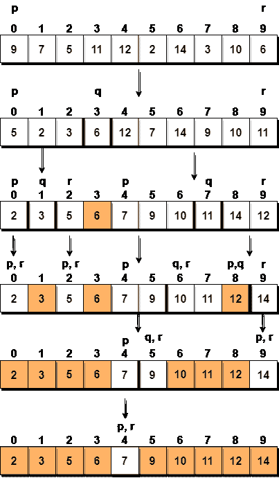
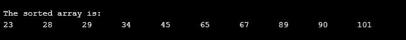

快速排序算法
快速排序是不同的排序技术之一，它基于分治的概念，就像归并排序一样。但是在快速排序中，所有繁重的工作(主要工作)都是在将数组划分为子数组时完成的，而在归并排序的情况下，所有真正的工作都发生在合并子数组的过程中。在快速排序的情况下，合并步骤完全不起作用。
也叫分区交换排序。该算法将列表分为三个主要部分:
- 小于枢轴元素的元素
- 枢轴元素(中心元素)
- 大于枢轴元素的元素
Pivot 元素可以是数组中的任意元素，可以是第一个元素，最后一个元素，也可以是任意随机元素。在本教程中，我们将最右边的元素或最后一个元素作为轴。
例如:在阵{52, 37, 63, 14, 17, 8, 6, 25}中，我们以25为枢。所以第一遍过后，名单会这样改。
{ 6 8 17 14 25 63 37 52 }
因此，在第一次通过后，枢轴将被设置在其位置，所有元素在其左侧较小，所有元素在其右侧较大。现在6 8 17 14和63 37 52被认为是两个独立的 sunarrays，相同的递归逻辑将被应用于它们，我们将继续这样做，直到整个数组被排序。
快速排序的工作原理是什么？
以下是快速排序算法中涉及的步骤:
- 在选择一个元素作为轴之后，这是我们这里数组的最后一个索引，我们第一次划分数组。
- 在快速排序中，我们称之为分区。将数组分解为 2 个子数组并不简单，但在划分的情况下，数组元素的位置应使所有小于枢轴的元素位于枢轴的左侧，所有大于枢轴的元素位于枢轴的右侧。
- 并且枢轴元件将处于其最终的分类位置。
- 左侧和右侧的元素可能没有排序。
- 然后我们选取子数组、轴左侧的元素、轴右侧的元素，通过选择子数组中的轴对它们进行分区。
让我们考虑一个有值的数组{9, 7, 5, 11, 12, 2, 14, 3, 10, 6}
下面，我们有一个图片表示排序将如何快速排序给定的数组。

在第一步中，我们选择最后一个元素作为枢轴，在这种情况下是6，并调用partitioning，因此重新排列数组，使得6将被放置在其最终位置，并且在其左侧将有所有小于它的元素，在其右侧，我们将有所有大于它的元素。
然后我们选择左边的子数组和右边的子数组，为它们选择一个枢轴，在上图中，我们选择3作为左边子数组的枢轴，选择11作为右边子数组的枢轴。
我们再次呼吁partitioning。
实现快速排序算法
下面我们有一个实现快速排序算法的简单 C 程序:
// simple C program for Quick Sort
#include <stdio.h>
int partition(int a[], int beg, int end);
void quickSort(int a[], int beg, int end);
void main()
{
int i;
int arr[10]={90,23,101,45,65,28,67,89,34,29};
quickSort(arr, 0, 9);
printf("\n The sorted array is: \n");
for(i=0;i<10;i++)
printf(" %d\t", arr[i]);
}
int partition(int a[], int beg, int end)
{
int left, right, temp, loc, flag;
loc = left = beg;
right = end;
flag = 0;
while(flag != 1)
{
while((a[loc] <= a[right]) && (loc!=right))
right--;
if(loc==right)
flag =1;
else if(a[loc]>a[right])
{
temp = a[loc];
a[loc] = a[right];
a[right] = temp;
loc = right;
}
if(flag!=1)
{
while((a[loc] >= a[left]) && (loc!=left))
left++;
if(loc==left)
flag =1;
else if(a[loc] < a[left])
{
temp = a[loc];
a[loc] = a[left];
a[left] = temp;
loc = left;
}
}
}
return loc;
}
void quickSort(int a[], int beg, int end)
{
int loc;
if(beg<end)
{
loc = partition(a, beg, end);
quickSort(a, beg, loc-1);
quickSort(a, loc+1, end);
}
}

快速排序的复杂度分析
对于其中划分导致子数组不平衡的数组，在左侧没有元素，所有元素大于枢轴，因此在右侧。
而如果继续得到不平衡的子阵，那么运行时间就是最坏的情况，也就是O(n<sup>2</sup>)
如果划分导致几乎相等的子阵，那么运行时间最好，时间复杂度为 O(n*log n) 。
最坏情况时间复杂度【大 O】:O(n2)
最佳案例时间复杂度[大ω]:O(n * log n)
平均时间复杂度[大-θ]:O(n * log n)
空间复杂度: O(n*log n)
我们现在知道，如果分区后产生的子阵分区不平衡，快速排序需要更多的时间才能完成。如果有人知道你一直选择最后一个索引作为枢纽，他们可以故意给你提供数组，这将导致最坏情况下的快速排序运行时间。
为了避免这种情况，您也可以随机选择轴元素。这在算法上不会有什么区别，因为你所需要做的就是从数组中选择一个随机元素，用最后一个索引处的元素交换它，使它成为枢轴，然后继续快速排序。
- 快速排序需要的空间很少，只需要
O(n*log n)额外空间。 - 快速排序不是一种稳定的排序技术，因此它可能会在排序时改变列表中两个相似元素的出现。
现在我们已经学习了快速排序算法，您也可以查看这些排序算法及其应用: